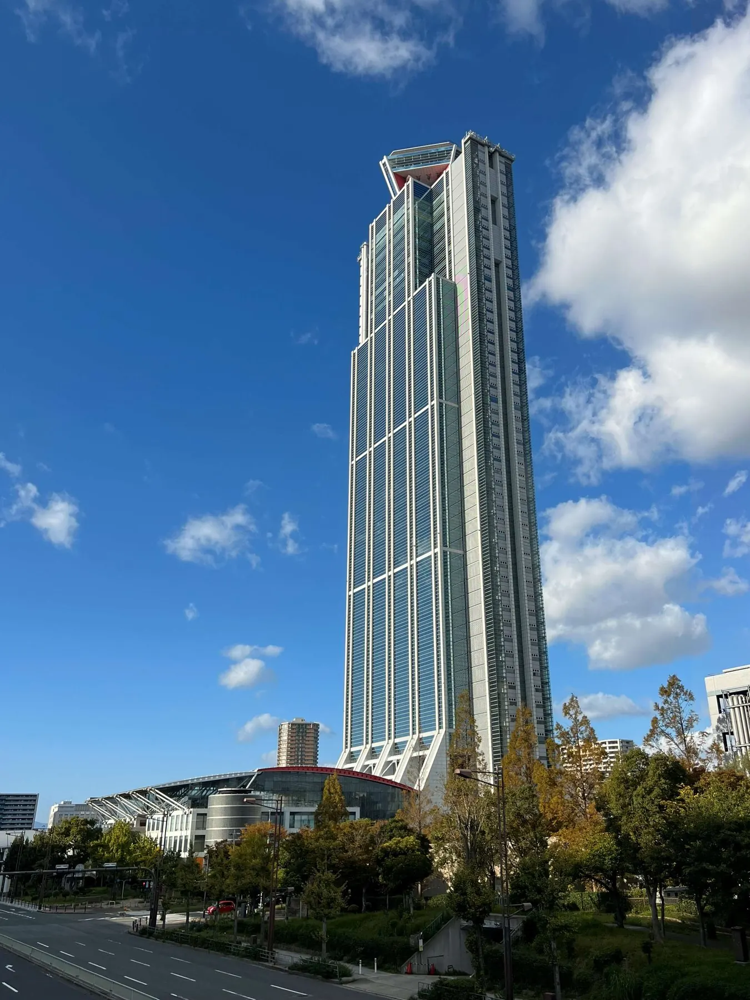

咲洲庁舎（コスモタワー）3F ｜ トレードセンター前駅 徒歩5分
ニュートラム（南港ポートタウン線）「トレードセンター前駅」から徒歩5分です。
中村歯科医院は、大阪府咲洲庁舎（さきしまコスモタワー）の3階にあります。
Osaka Metro中央線「コスモスクエア駅」から徒歩8分です。
当院は車椅子をご利用の患者様にも安心して歯科治療を受けていただけるよう、バリアフリーに対応をしております。
診療時間 9:30〜13:00 ／ 15:00〜19:00 ※土曜午後は15:00〜17:00・日曜・祝日休診